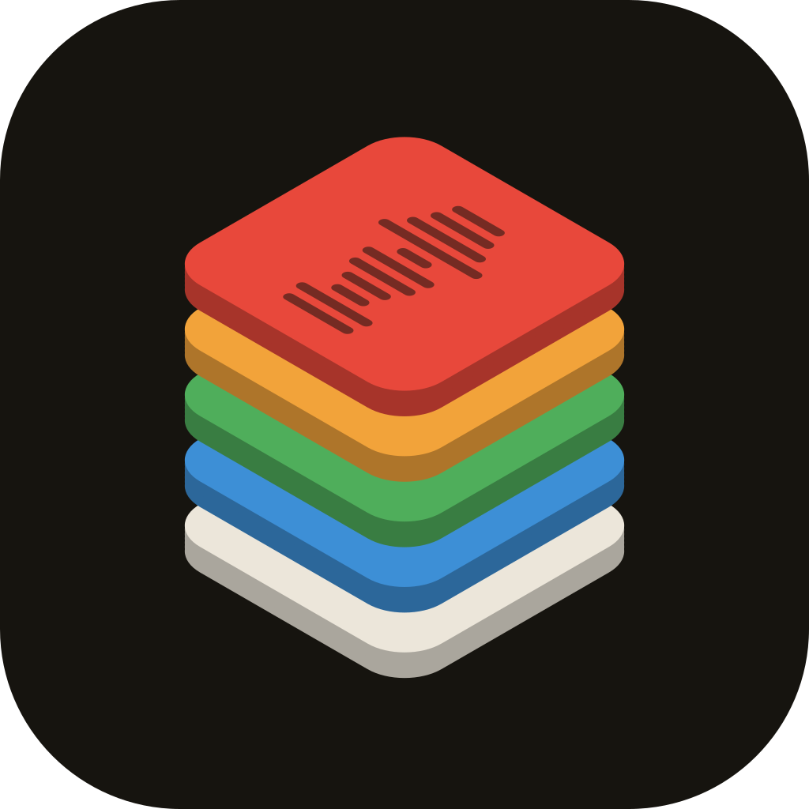
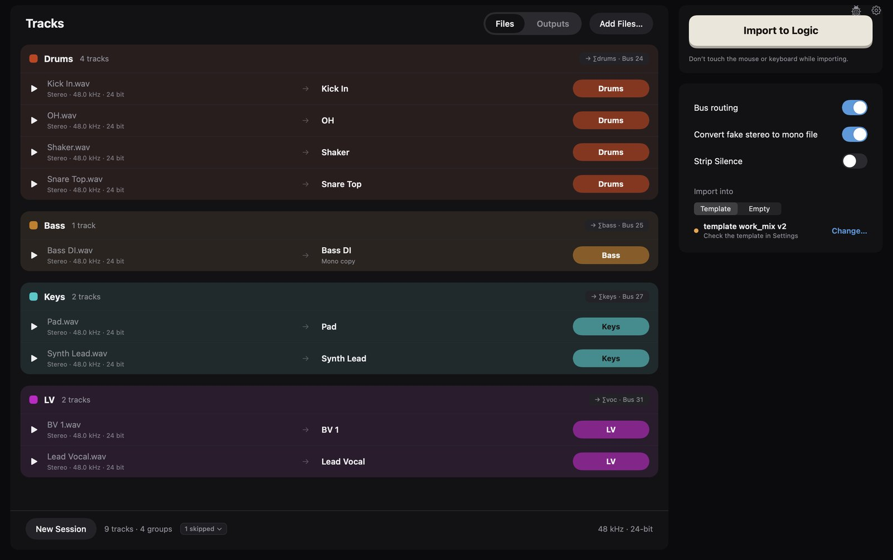

Primer for Logic ProMore time
spent mixing.
Take a walk, stretch your legs, grab a coffee. Primer is your hardworking assistant engineer, prepping your session while you're taking a break.

Four steps. One batch.
- Drop the WAVsDrag in a folder or some files. Primer checks them and tells you about problems, such as mixed sample rates.
- Name and groupPrimer finds a group for each file from its name. Check the list. Change names and groups where needed. To split a stereo WAV into two mono tracks, right-click it.
- Prepare copiesPrimer makes copies with your names and order. Your original files do not change.
- Import to LogicPress Import to Logic. Primer makes one track per file, coloured and routed to your auxes. Logic closed? Select your template or an empty project.
Hear it first.
The beta is invite-only. Leave your email and we'll tell you when Primer is out.
Release
An email when Primer is out.
Progress
Short updates while we build it.
New tools
News when a new Stroomdoos app is ready.
Made by an engineer, for engineers.
I'm Luc, and I make Primer in the Netherlands under the name Stroomdoos (/ˈstroːmdoːs/, Dutch for power box).
Need help with Primer? Mail support@stroomdoos.com. Anything else: info@stroomdoos.com.